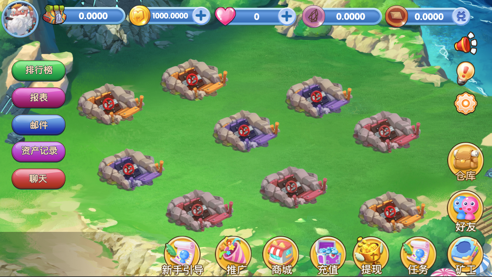
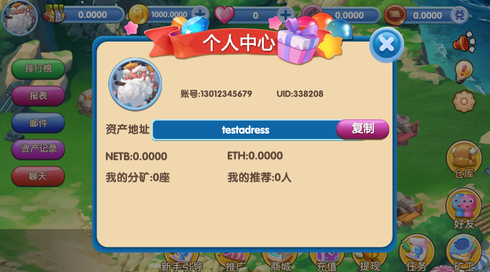

万民挖矿
下载地址： http://154.197.26.14:8088/assets/btmc.apk
登录账号：18888888888，密码：123456，交易密码：123456
矿场
1.最多可以建立9个矿场（一期开放三个，小型（柚子），中型（以太），大型（比特）矿场各一个）
2. 3个小型（柚子）矿场，3个中型（以太）矿场和3个大型（比特）矿场（每个矿场有不同的算力值，另附表）
3.激活不同的矿场，需要不同数量的金币。（数据另附表）
4.小型（柚子）矿场，新开启矿场需要1000金币
5.中型（以太）矿场，新开启矿场需要5000金币
6.大型（比特）矿场，新开启矿场需要10000金币
7.每个矿场可以点击进去，当矿场有币产生时，需要玩家手动收集。
8.矿位：每个矿场，都有6个矿工位，派遣最多6名矿工。
9.矿场算力变化：每天玩家登陆时，弹出奖励页面，每个开启的矿场永久增加一点算力。
10.本矿井算力：矿井的左面显示矿井的算力值，分别显示基础值和因其他原因增加的算力值。
11.矿井总算力：显示当前矿井中，产生的总算力。（挖矿的矿工的算力，穿戴的装备的算力，矿机的算力）
矿工
1.矿工分四个等级，由低到高分别显示为青铜、黄金、蓝宝石、红钻，矿工级总共21级
2.每个玩家最多可以拥有18名矿工。
3.每个等级的矿工的体力值和算力值均不同。（另附表）
4.体力变化：矿工的体力值随着时间的推移而减少，数据另附表。当体力衰减到0时，矿工停止挖矿。
5.算力变化：矿工的算力不随时间的变化而变化。
6.矿工可以用金币购买升级，提升算力。（数据另附表）
商店
1.玩家只能从商店中获取（通过金币购买）道具。
2.商店可以购买的道具：饮料、0级矿工。
3.商店可以购买的装备：帽子，鞋子，衣服，铲子，矿灯，挖机、宝石项链。
4.商店中可以购买任意等级的装备（青黄绿红）。
5.弹窗：选择装备购买时，需弹出对话框（确认、取消）
图片展示

